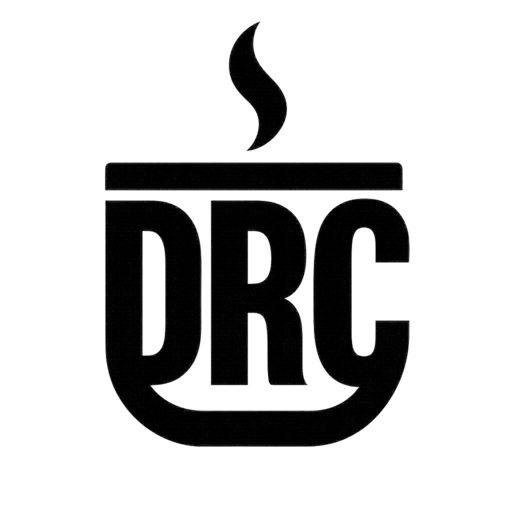

DARK
ROAST
CYBER
// Mission Profile
Detect. Advise. Engineer. Intel.
EST. SPRING 2025

// Mission Profile
Detect. Advise. Engineer. Intel.
Detection engineering, alert triage, and validation. Close gaps vendors and prevention controls miss.
Security operations guidance sized to your team, tooling, and risk appetite. Scale what is effective.
Security operations engineering for telemetry, automation, identity, cloud, and control workflows. Build what defenders rely on.
Threat research translated into detections, triage logic, response playbooks, and validation scenarios for practical defense.